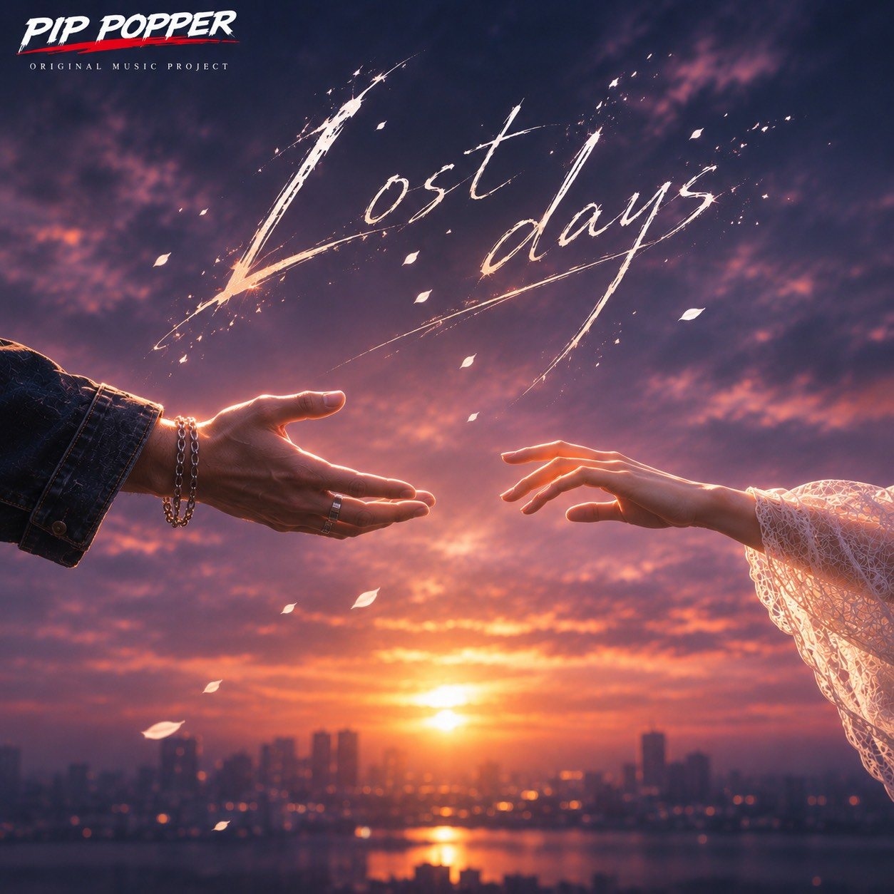

Lost days

03
Lost days
PIP POPPER
AI ImpressionAIの感想
忘れられない声、色褪せない記憶。それでも二人は、それぞれの明日へ歩き出す。愛した日々と戻れない時間を、切ないメロディーとラップに込めた一曲。
Lyrics
変わる季節の中で何度も交わした約束は叶わないことわかってたよ
ふたりが終わりを意識したとき成り立たねぇ方程式俺に求める要求は、もはや自意識過剰を超えて非常識 yoあふれ出る愛と情だが2人はまだ発展途上話し合っても並行線上このまま行っても成功せんぞ
Stay with me 君の声がまだ響いてる 僕の心にずっとLoving you 住みついて離れない永遠に Don’t forget to meStay with me 君以外の誰かじゃ満たされずむなしくなるだけいつもI miss youどんなにもがいてもこの想いは壊せない
色褪せない思い出は拭い去ることはできず今でも胸の奥で育ってく
あの言葉 愛の言葉早く忘れたいんだあのことは俺たちゃ望んでなかっただけど、いずれこうなることはわかった 無駄にはしないぜ必ずお前のもとには帰らずもう君との未来は見ないで行こうきっとこれでいいのさ未来永劫
互いの未来 夢見ても 願いは届かない(You don’t appreciate my kindness.We dreamed of our love success.)悲しい朝日がふたりを包み それぞれの明日へ(My love送るよあなたへTomorrow is another day.）
Glory days輝いた軌跡が 光を失うまで僕はRemember youどんなに想っても そこにはもう帰れないFall in loveこんなにも誰かを愛したことはないだからStand by me君のそばにいたい この想い果てるまで
Stay with me君の声がまだ 響いてる 僕の心にずっとLoving you住みついて離れない 永遠に…Stay with me 君以外の誰かじゃ満たされずむなしくなるだけいつもI miss youどんなにもがいてもこの想いは壊せない